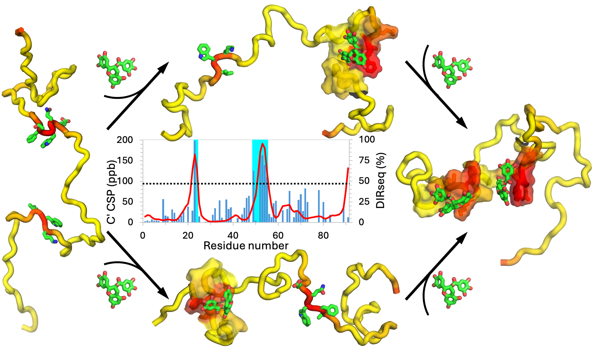

DIRseq is a sequence-based method for predicting drug-interacting residues of an intrinsically disordered protein. For a central residue n, every other residue i contributes a multiplicative factor f(i; n), which depends on the amino-acid type of residue i and the sequence distance |i-n|. The total factor of residue n is then converted to a propensity score via a sigmoid function.
You can download the javascript code, DIRseq.js, for DIRseq here. To run, use the following command,
nodejs DIRseq.js PROTEINSEQENCEwhere “PROTEINSEQENCE” is the protein sequence in one-letter representation.
Name:
Seqence:
1st column, amino acid; 2nd column, propensity of being a drug-interacting residue (on a scale from 0 to 100)